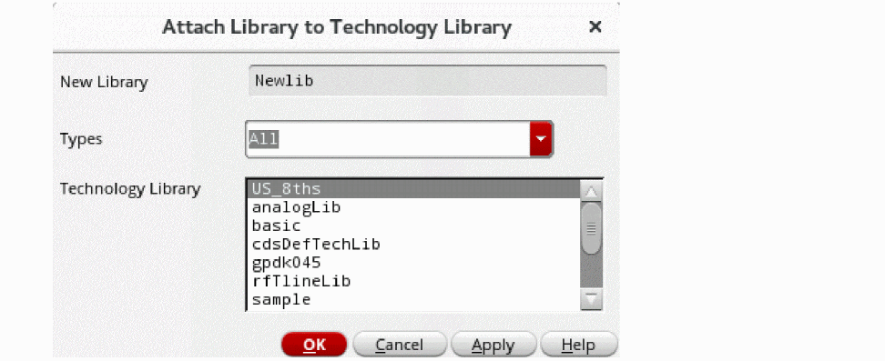

Attaching a New Library to an Existing Technology Library
To attach your new library to a specific technology file, follow these steps:
- On the Technology File for New Library form, select Attach to an existing technology library.
-
Click OK.
The Attach Library to Technology Library form appears. The new library name appears in the New Design Library field. Technology libraries in your library path appear in the Technology Library list box. - You can filter the technology library list by selecting the type from the Types drop-down.
-
In the Technology Library list box, choose the technology library to which you want to attach your new library.
If thedefaultAttachTechenvironment variable specifies a valid technology library, it appears selected by default in the list. - Click OK.
The new library is attached to the specified technology library.
Related Topic
Return to top